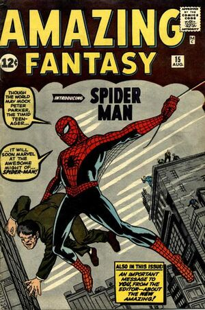
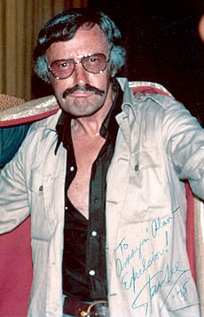

COMICS
Marvel Worldwide, Inc., conocida como Marvel Comics, es una editorial de historietas estadounidense creada en 1939, inicialmente con el nombre de Timely Publications. Entre sus personajes emblemáticos del género superheroico se encuentran Spider-Man, Wolverine, X-Men, Capitán América, Iron Man, Hulk, Thor, Los 4 Fantásticos, Daredevil, Punisher, Los vengadores, entre otros. A partir de los años 1990, la compañía se posicionó como una de las principales editoriales de cómics del país. El 31 de agosto de 2009, The Walt Disney Company compró Marvel Entertainment por cerca de 4 000 millones de dólares, fusionándose con esta el 1 de enero de 2010.

Comic MARVEL Avengers:Co-starring the defenders!

Comic MARVEL The INFINITY GAUNTLET
Comic MARVEL AMAZING FANTASY Spider-Man
STAN LEE
Stanley Martin Lieber (Manhattan, Nueva York; 28 de diciembre de 1922-Los Ángeles, California; 12 de noviembre de 2018), más conocido como Stan Lee, fue un escritor y editor de cómics estadounidense, además de productor y actor ocasional de cine.
Es principalmente conocido por haber creado personajes icónicos del mundo del cómic tales como Spider-Man, X-Men, Los 4 Fantásticos, Hulk, Iron Man, Thor, Daredevil, Doctor Strange, Black Panther, Ant-Man y Bruja Escarlata, entre otros muchos superhéroes, casi siempre acompañado de los dibujantes Steve Ditko y Jack Kirby. El trabajo de Stan Lee fue fundamental para expandir Marvel Comics, llevándola de una pequeña casa publicitaria a una gran corporación multimedia. Todavía hoy, los cómics de Marvel se distinguen por indicar siempre «Stan Lee presenta» en los rótulos de presentación. También tuvo un programa televisivo en History Channel en donde buscaba superhumanos «reales».
